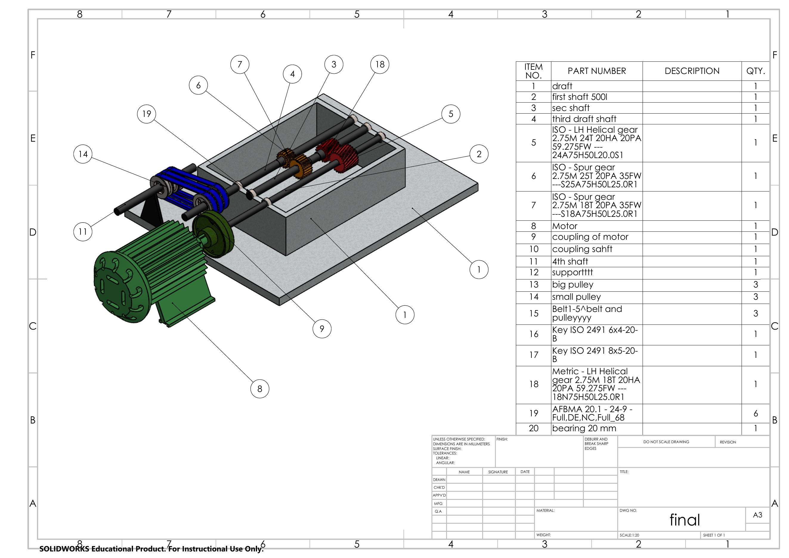

R
REVERSELAB
AI 逆向设计工作台
导入扫描数据
生成工程图
下载工程图
自动主轴对齐
可选
恢复原姿态
扫描网格已载入
扫描模型
工程图
已同步扫描数据
−
100%
+
姿态校正预览
齿轮箱 · 扫描网格三维预览
特征识别 95.2%
SCAN MESH
3D PREVIEW
拖拽旋转 · 滚轮缩放
比例 1:1
▱
平面
置信度 99.1%
◉
圆柱 / 孔位
置信度 97.6%
◇
倒角
置信度 91.4% · 建议复核
⌒
圆角
置信度 84.8% · 待人工标注
扫描工程图
齿轮箱 · 工程图复核
扫描资料
工程图预览

工程图复核：检查特征位置、零件明细与图纸信息。
扫描结果
A3 工程图 · 尺寸标注
三维扫描网格 · 特征复核